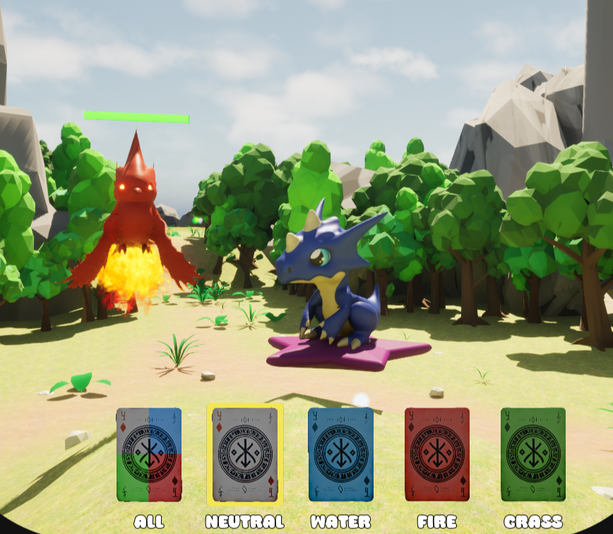
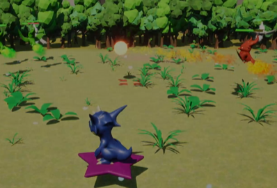
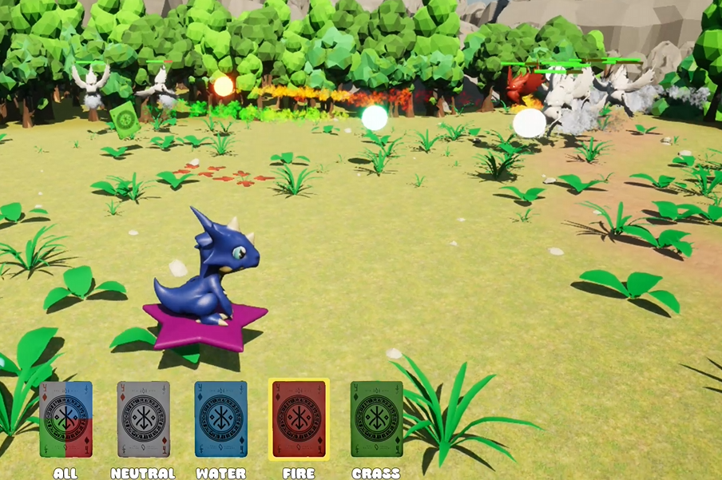
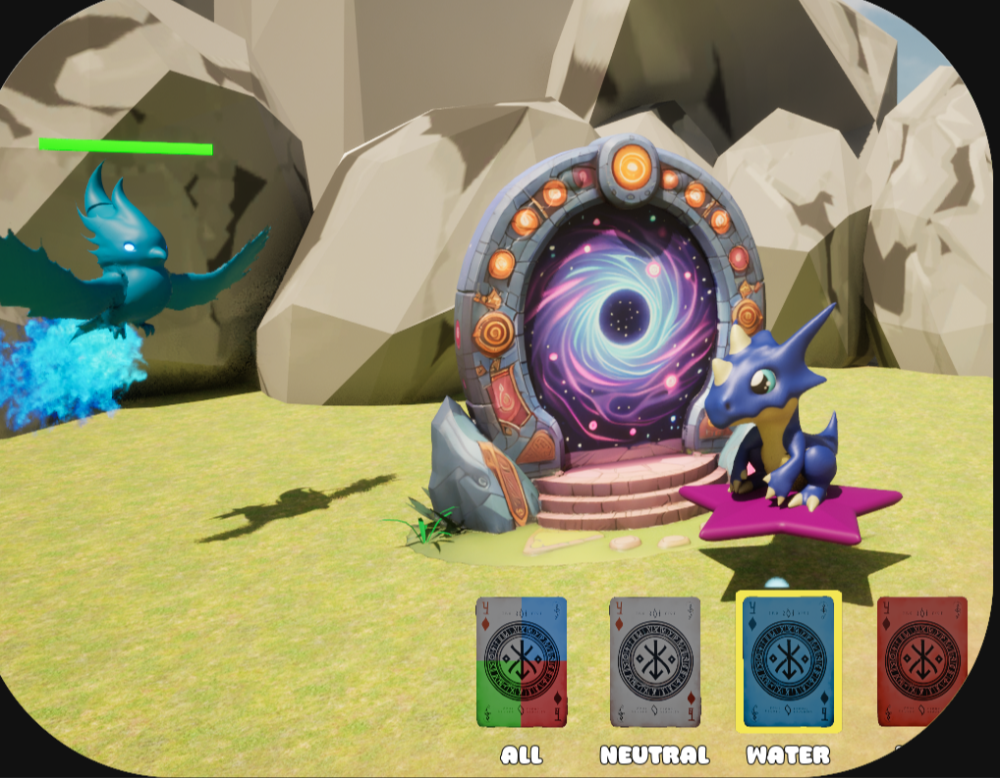
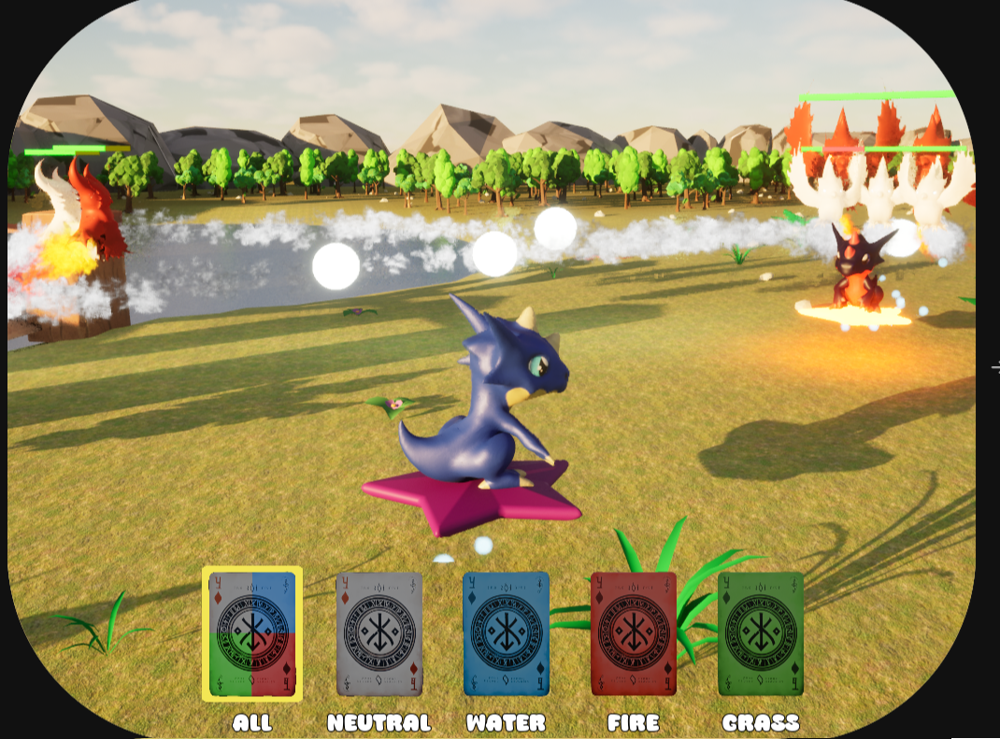
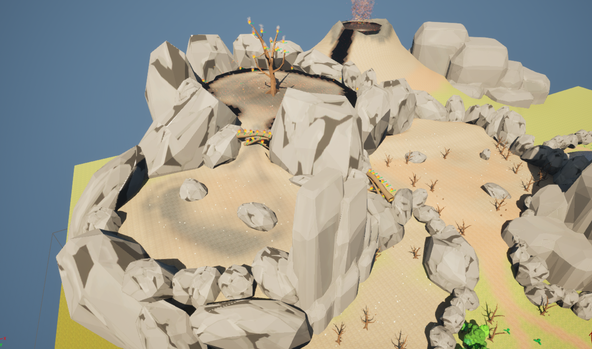
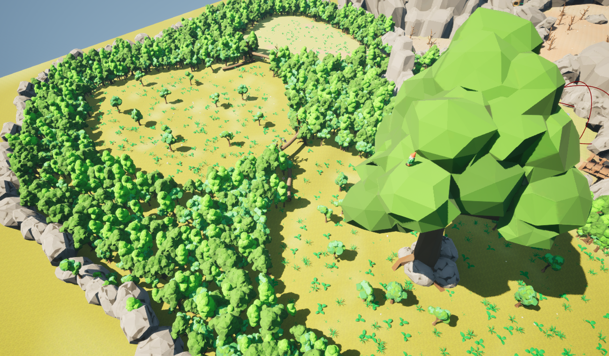
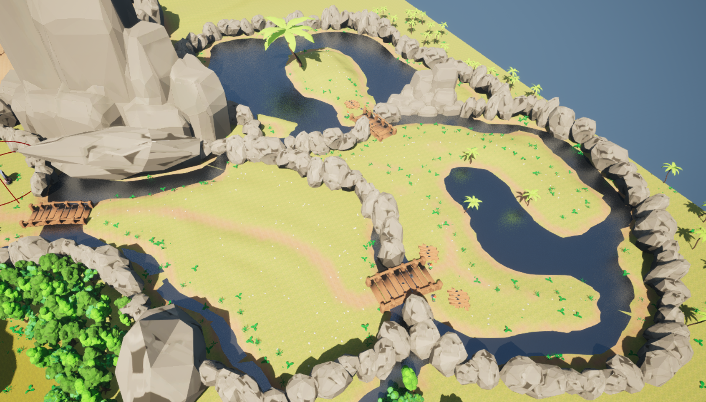
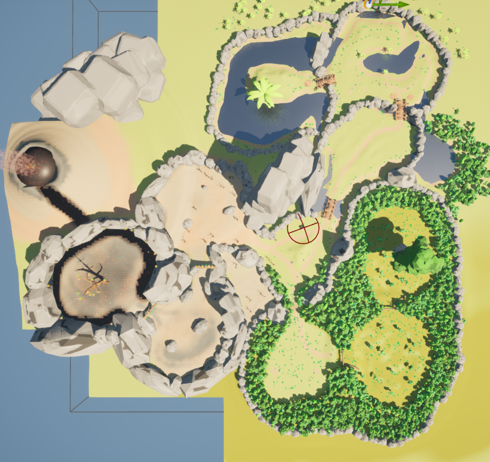

Short Description
Star Rider — Elemental Shuffle is a fast-paced battle simulator in which the player, as a small dragon on a star, collects minions (birds), commands them, and sends them into phase-based exploration and boss fights against enemies with elemental affinities. Core focus: fast, tactical team composition (element synergies + levels) and risk/reward exploration.
Background
Developed for Mini Jame Gam #42 (May 2–4, 2025) by a small team, where I served as Lead Gameplay Programmer. Team: 2 programmers (me: Lead Gameplay & larger UI features; 1 programmer: UI polish), 1 artist (character meshes), 1 level designer (world-building & balancing). The goal of the jam was to create a fun, compact game with a clear core loop and tangible progression in a short amount of time.
Gameplay
- The player controls a dragon on a small star and starts with 5 minions (birds).
- Exploration phase: the player explores an area (volcano / lake / forest) for a limited time (Phase 1 = 90s, Phase 2 = 120s, Phase 3 = 150s) and defeats enemy birds. Defeated enemies drop summon cards, which can be used to recruit new minions at the summoning portal.
- Minion system: birds each have an element (Neutral, Fire, Water, Plant) and a level (Lvl1, Lvl2, Lvl3). Elements follow a rock-paper-scissors system (Water > Fire; Fire > Plant; Plant > Water). Higher levels mean more HP and higher base damage. Minions automatically attack enemy birds within range.
- Map progression system: when a boss has been defeated and the player enters exploration phase, another area opens up in each region (Volcano, Forest, Lake). Enemies in the new areas more often have a higher level than enemies in the previous areas.
- Boss phase: after each exploration phase, a boss fight follows (no time limit). Each boss has a dominant element; after a boss is defeated, that element is locked for future bosses, forcing the player to approach the choice of future exploration areas strategically.
- Goal: complete three boss phases (three bosses total) successfully → victory. If the player fails, the game restarts.

- Development & Technology -
Technical Details
- Engine: Unreal Engine (Blueprints / Visual Scripting)
- Source Control: GitHub
- Development time: 3 days (Game Jam: 02.–04.05.2025)
- Team: 4 (2 programmers, 1 artist, 1 level designer)
- My tasks: Lead gameplay programming (minion/enemy/boss logic/phase transitions/summon mechanics, implementation of core UI functions, coordination with the UI and level team for balancing & presentation.)
Features
Elements

Fire
Strong against Plant, weak against Water.

Plant
Strong against Water, weak against Fire.

Water
Strong against Fire, weak against Plant.
Neutral
Moderately strong against all elements.
Combat System

Elemental Weaknesses
(Water > Fire; Fire > Plant; Plant > Water)

Command Minions
Minions can be selected individually by element, or all at once! Clicking the left mouse button sends the selected minions to the target location. Using "Q", the selected minions follow the player!

Summon New Minions
The summoning portal is located at the starting point of the exploration phase, in the center of the exploration map, between all other areas.

Boss Fight
Defeat all 3 bosses! Each boss has an associated element. Once a boss is defeated, future bosses CANNOT have the defeated boss’s element!
Areas (Exploration Phase)

Volcano
Here there are neutral and fire enemies.

Forest
Here there are neutral and plant enemies.

Lake
Here there are neutral and water enemies.

Overview
Overview of the entire map. The summoning portal is located in the center of the map.
Challenge → Solution Approach
- Challenge: Build a system in only 72 hours that is both easy to pick up and fun as well as strategically meaningful.
- -> Solution: Focus on a small but robust mechanic base: four elements × three levels provide simple and fun gameplay with little programming and level design effort. A tutorial was planned for quick accessibility, but unfortunately could not be created in time.
- Challenge: As soon as a minion had an enemy "in sight" (large collision sphere on the minion for collision detection="enemy detection"), it stopped and shot at the enemy until it was defeated. However, no further enemy remained in sight and the minions stopped immediately, while the player’s other minions were still fighting -> the first combat system did not feel fluid enough.
- -> Solution: Once a minion defeats an enemy, a sphere collision is triggered in a certain radius at the defeated enemy’s position to check for other remaining enemies. If this minion now finds an enemy, after defeating one enemy it moves on to the next enemy in combat.
- Challenge: The combat system felt monotonous because all minions were controlled with one button.
- -> Solution: Keyboard bindings for selecting all minions of a certain element: key 1 selects all minions (regardless of element), key 2 all water minions, etc.
Learnings
- In short jams, a clear, reduced system scope pays off: a few well-functioning gameplay elements (minions, enemies, level, exploration/boss phase) deliver better fun than many half-baked features.
- Modular Blueprint templates make it easier to expand quickly (new minion/enemy types, boss variants) without major refactoring.
- Early, focused playtesting (level designer) is crucial for achieving balance and loop fun in a short time.
- Team division (programming vs. artist vs. designer) worked well: clear responsibilities enable fast iterations and lots of intensive playtesting.
Downloads / Links / Screenshots
Links to GitHub, builds, videos, or embedded screenshots/videos.
← View Star Rider - Elemental Shuffle on itch.io ← Back to Projects